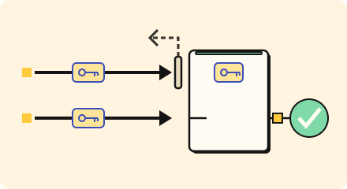

Stay correct · 3 minutes
Exactly once, on purpose
Retries are normal, so every action must be safe to repeat.
Open this lesson
Did my payment go through?
Networks drop answers. A phone taps Pay, the payment succeeds, the reply is lost, and the app tries again. Without care the customer is charged twice. A retry is safe only if repeating the action has the same effect as doing it once. That property is called idempotency.
The key
The purchase keeps one key across retries. An atomic ledger returns its stored receipt instead of repeating the charge.
Try the idea
The queue delivers some payments twice, and customers are charged twice. Add an idempotency store.
Key numbers
- Duplicate rate in a queue
- ≈ 0.1 to 1 percent. at-least-once delivery, approx.
- Key lookup
- ≈ 1 ms. approx.
- Keep keys for
- ≈ 24 hours. approx.
Check your reasoning
Think through these questions before opening the lesson. In the game you can test the idea and compare your reasoning.
- What is an idempotent action?
- Why do duplicates happen with queues?
- Where does the idempotency key come from?
The key point
Give every action a key, and repeating it becomes harmless.
Practise this idea
- Medium
Notification service
Every other team asks you to send messages: order shipped, new login, a sale starting. You send them by push, email and text through outside providers who have their own limits. Send each message once, and never block the team that asked.
- Hard
Scheduled job service
Customers register jobs: "call my web address every night at 02:00" or "every hour on the hour". Aim to fire within 5 seconds; work still waiting after 60 seconds counts as failed. Retry safely after a crash. One external effect requires the customer endpoint to honor a stable job occurrence key. Half the world picks the top of the hour, so a huge crowd of jobs comes due in the same second.
- Hard
Video upload pipeline
Creators upload videos that must be converted into several qualities before anyone can watch. Conversion is slow, costs real money per video, and the converter sometimes fails on a broken file. Nothing a creator uploads can be lost.
- Medium
One-to-one chat
People send short messages to each other from their phones. A message must arrive once, in order, even when the phone is on a bad connection and sends it again. If the other person is offline, the message waits and a notification goes out.